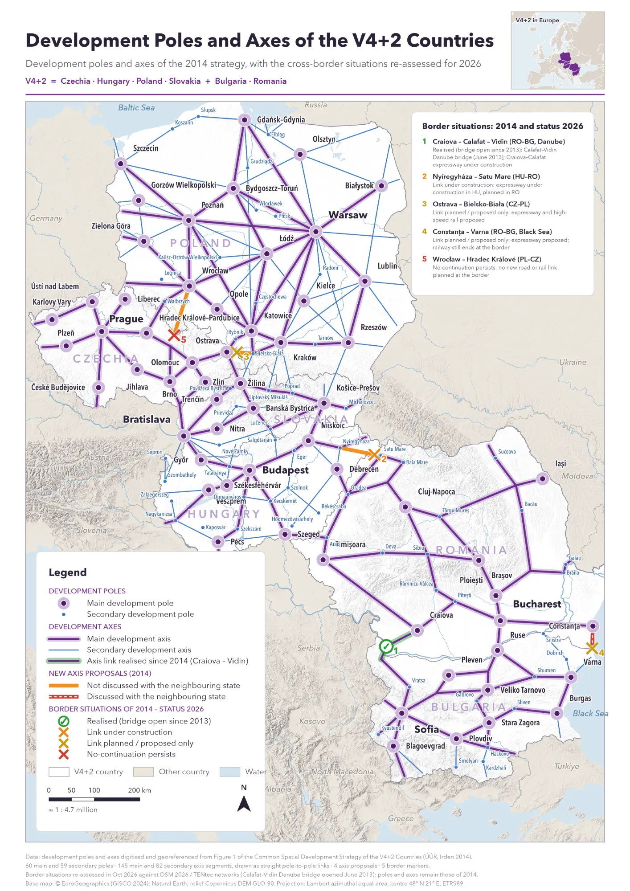
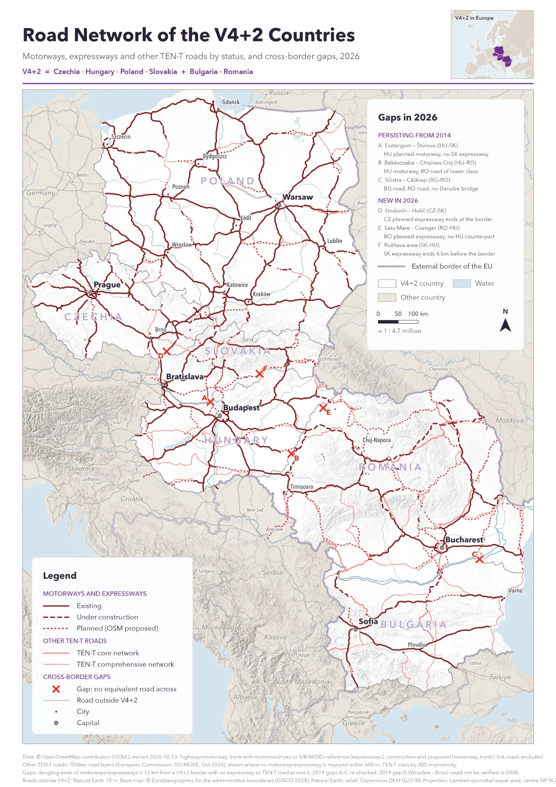
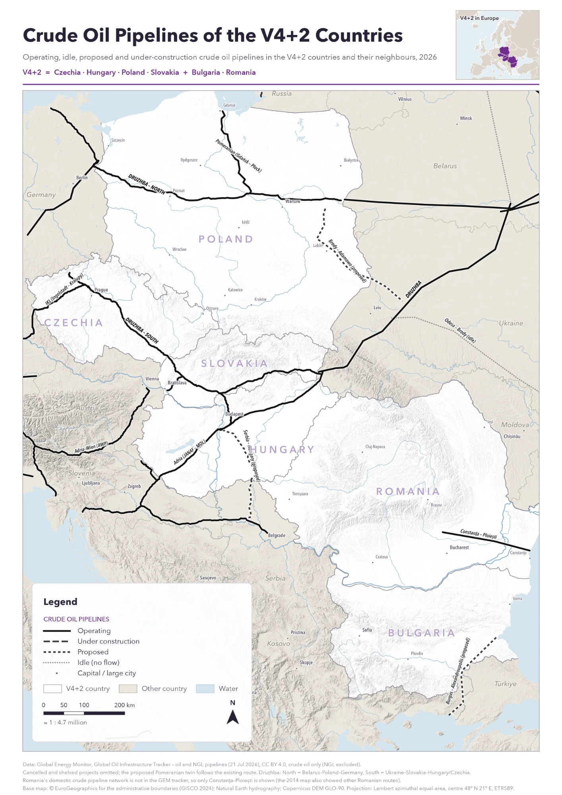
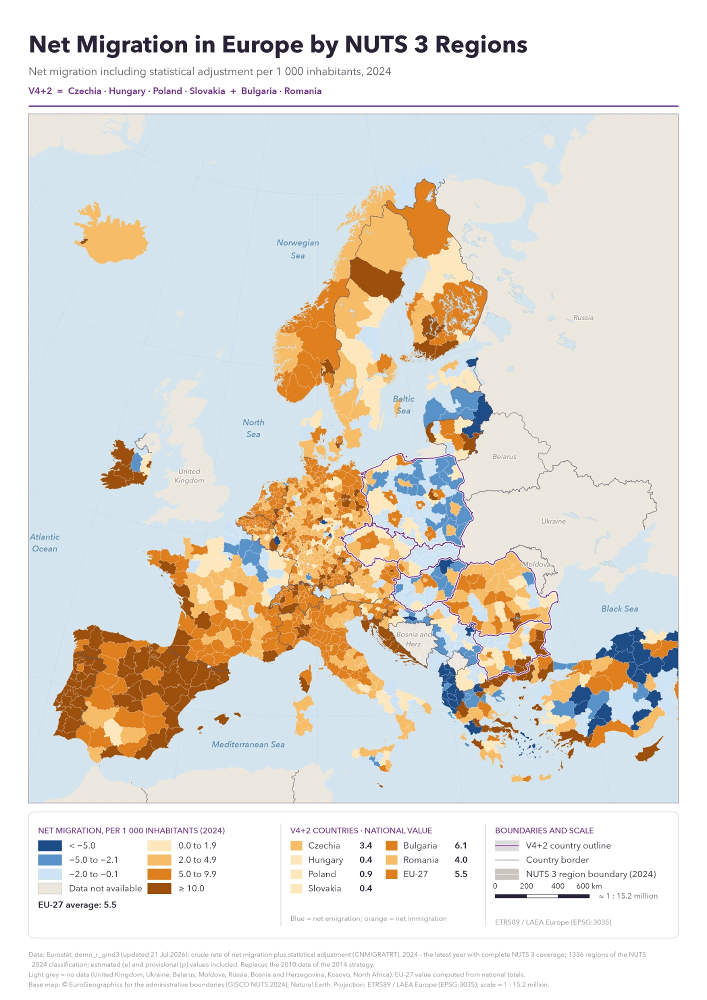

Атлас · октомври 2026
Атлас V4+2
Атлас от 36 листа във формат А3, създаден наново по Общата стратегия за пространствено развитие на страните от V4+2 – Чехия, Унгария, Полша, Словакия, България и Румъния. Запазва темите на оригинала от 2014 г., но всяка карта е изчертана наново с най-новите отворени данни, с една система от легенди, един шрифт и една палитра, така че листовете да се сравняват с един поглед.
- 36
- листа + корица
- 6
- държави
- ~10 GB
- изходни данни
Как: по един Python скрипт на лист върху обща стилова библиотека (оформление, легенда, подложка, надписи, проекции); резултат във векторен PDF и PNG с 300 dpi.
-
Czechia · Hungary · Poland · Slovakia · Bulgaria · Romania
V4+2 Map Atlas
Common Spatial Development Strategy of the V4+2 Countries maps recreated with 2024–2026 data
A3 atlas · October 2026Bojan Baidanoff
-
V4+2 Map Atlas
Contents
- Development poles and axes
- 1
- Transport networks
- 2–5
- Technical infrastructure
- 6–8
- Socio-economic conditions
- 9–12a
- Environmental conditions
- 13–18
- Barriers of spatial development
- 19–28
- European context
- A3-1–4
This web edition shows six of the 36 sheets: figures 1, 3, 8, 10, 10a and 21.
-

-

-

-

-

-

-
In the full atlas
30 more sheets
Railways, waterways and airports; electricity and gas; natural change, GDP and unemployment; biogeographic regions, protected areas, Natura 2000 and land cover; nine barrier sheets and four maps of the European context.
Sources
OpenStreetMap contributors (ODbL) · Eurostat and GISCO (© EuroGeographics) · EEA · Copernicus · European Commission TENtec · Global Energy Monitor (CC BY 4.0) · GIE · ENTSO-E · UNEP-WCMC and IUCN Protected Planet · OurAirports · Natural Earth. Full source notes are in the footnote of each sheet.
Original strategy: ÚÚR, Brno, 2014.
-
V4+2 Map AtlasOctober 2026
Кликнете върху страница, плъзнете или използвайте стрелките, за да прелиствате.